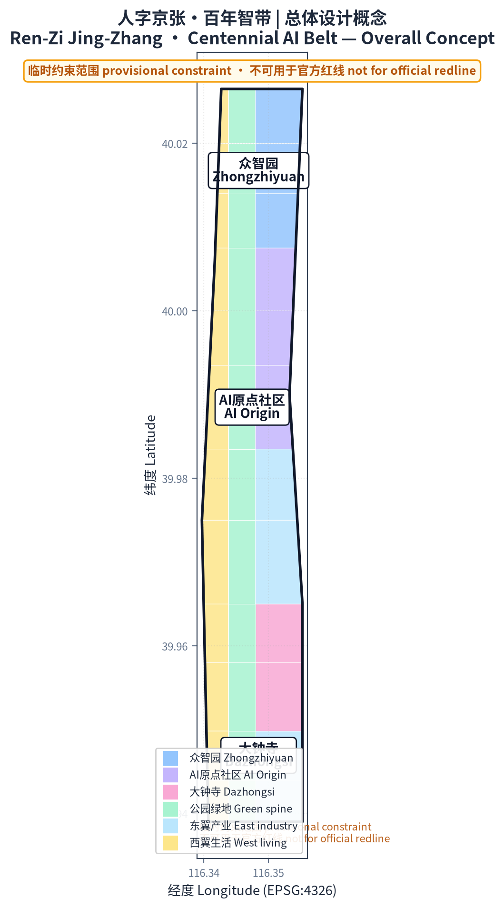
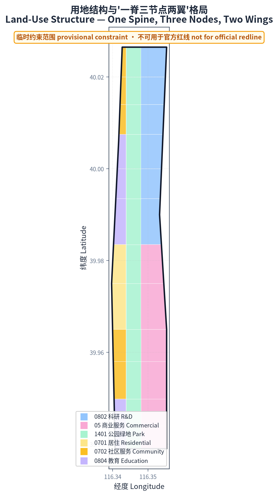
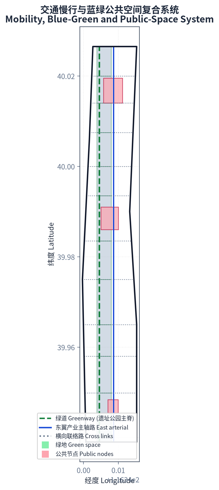
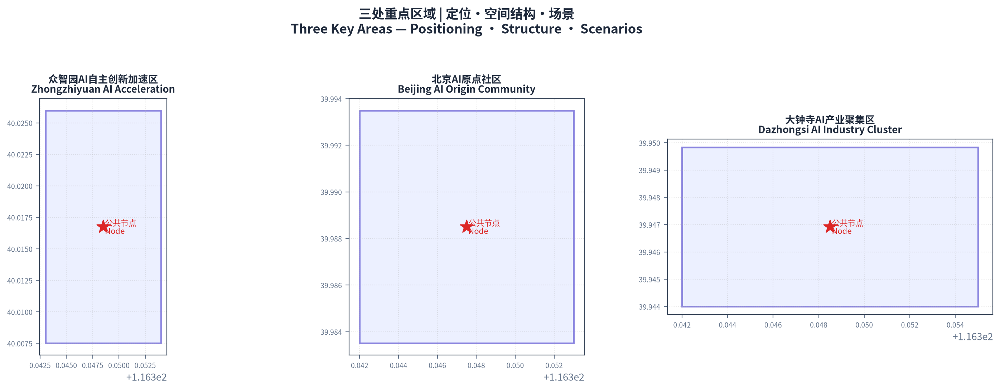
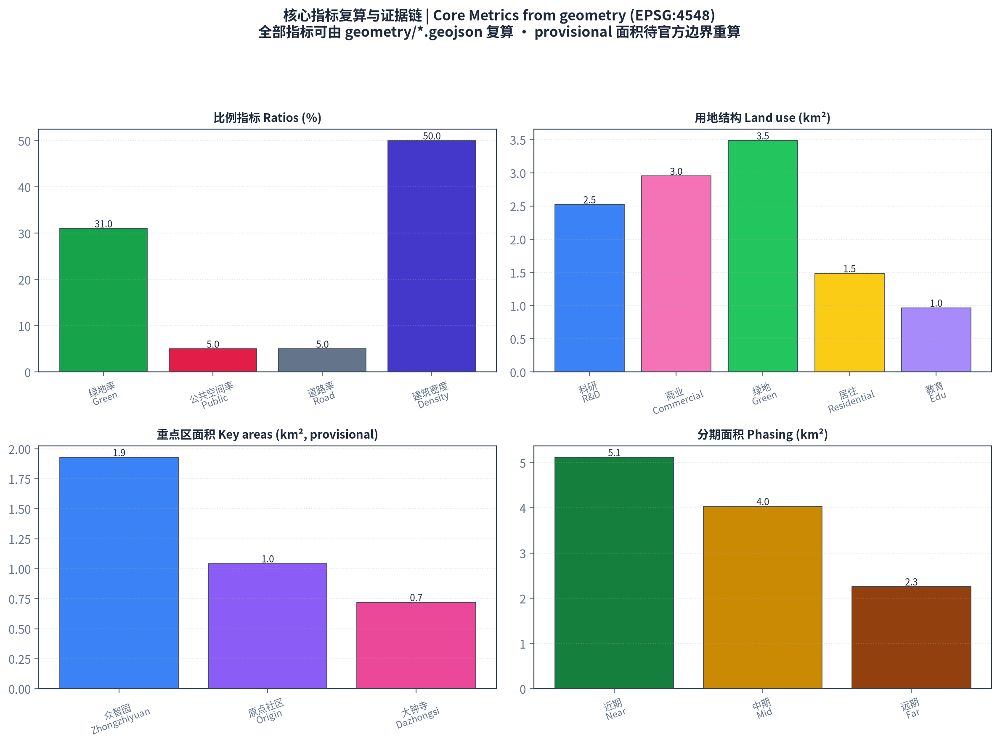

人字京张·百年智带——百年京张AI创新带城市设计方案
以京张铁路'人'字形展线为文化原点，构建'一脊三节点两翼'的AI创新带空间结构：京张遗址公园活力带为南北主脊，众智园、AI原点社区、大钟寺为三大节点，中关村科技服务翼与小月河场景赋能翼为东西两翼。
人字京张·百年智带
设计依据与资料清单
本方案以官方资格预审公告的任务框架为总依据，以面向智能体的开源征集任务书为内容清单，以公开可查的规划标准为专业底线。正式依据包括：北京市规划和自然资源委员会海淀分局《百年京张AI创新带城市设计国际方案征集资格预审公告》（2026-05-09，含项目概况、1.3 征集目的、1.4 工作内容、1.5 设计任务）来源；面向全球智能体的开源征集任务书摘录（2026-05-18，含三大定位、五大功能、三区两翼与六项智能体任务）来源；以及《城市设计管理办法》《城市、镇控制性详细规划编制审批办法》《国土空间调查、规划、用途管制用地用海分类指南》等专业标准的原则性要求 标准 标准。
当前官方发布中未包含三层范围与三处重点区的精确官方多边形。本方案使用仓库维护者提供的临时粗略多边形作为 provisional constraint 开展生成、可视化和非正式面积复核，并在 sources.json、assumptions.json 与全部图面中明确标注为"临时约束范围（provisional constraint）" 来源。待官方 polygon 发布后，所有精度敏感的面积指标须按官方边界重算。三层范围的官方文字面积（统筹研究范围 43.6km²、总体设计范围 11.4km²、重点区域 368.4ha）作为规划级事实引用 指标。
用地分类采用自然资源部《国土空间调查、规划、用途管制用地用海分类指南》的二级编码表达，本方案的科研用地（0802）、商业服务业用地（05）、居住用地（0701/0702）、公园绿地（1401）等均按该指南归类 标准。所有概念性空间建议均为开放共创建议，不替代法定规划，不构成政府审定结论 标准。

三层范围工作框架
统筹研究范围（43.6km²）
北至北五环路、东至京藏高速、南至西直门外大街、西至万泉河路的统筹研究范围，承担世界级AI创新生态体系的战略研究职能。本层回答三个问题：海淀AI产业在全链条中的战略重点、面向未来的"AI+"产业方向、以及"三区两翼"与"两区一带"的区域协同回路 标准。本方案在此层提出"三区两翼"的协同模型：三区（众智园、AI原点社区、大钟寺）构成创新链条的策源—加速—集聚纵向回路；两翼（中关村科技服务翼、小月河场景赋能翼）分别承担要素全球配置与场景赋能职能，形成横向支撑 来源。该范围的产业与空间研究以背景性公开资料为主，不做精确面积主张 空间数据。
总体设计范围（11.4km²）
以京张遗址公园周边 1-2 公里城市地区为总体设计范围，达到控制性详细规划的城市设计深度。本方案在此层落地"一脊三节点两翼"的总体空间结构：以京张遗址公园活力带为南北主脊，串联三大重点节点，东西两翼承载科技服务与场景赋能。设计通过 land_use.geojson 的完整用地分区表达功能布局，通过 roads.geojson 表达交通骨架，通过 green_space.geojson 与 public_space.geojson 表达蓝绿与公共空间网络 空间数据 空间数据。
重点区域范围（368.4ha）
众智园AI自主创新加速区（192.1ha）、北京AI原点社区（104.3ha）、大钟寺AI产业聚集区（72.0ha）三处重点区域开展规划综合实施方案深度的详细设计。三处区域自北向南沿京张遗址公园主脊分布，构成"自主创新—原始创新—产业集聚"的纵向创新链条 空间数据 空间数据 空间数据。
临时边界说明：本方案全部范围线均来自 provisional constraint，仅用于概念生成与展示，不可用于官方红线、精确面积主张或法定规划控制。重点区面积复核值（众智园约 192.9ha、原点社区约 104.3ha、大钟寺约 72.0ha）与公告文字面积基本吻合，但仍属临时复核 指标 指标 指标。

统筹研究范围产业与未来城市研究
一带总体概念、命名与Logo方向
总体概念："人字京张·百年智带"。 概念取自京张铁路最富象征意义的"人"字形展线——1909 年詹天佑在八达岭青龙桥创造的"人"字形铁路设计，是中国自主创新的历史原点。本方案将"人"字从工程符号升华为创新符号：人（人才、人文、人类）与智能（AI）相互支撑，构成创新带的双柱。一撇是人才与创造力，一捺是技术与智能，交汇处即创新发生的地方。
命名体系： 主名称"人字京张"（Ren-Zi Jing-Zhang），英文主标识"JZ-AI Belt（Ren-Zi Innovation Belt）"。三节点沿用任务书既有名称（众智园、AI原点社区、大钟寺）并赋予人字叙事角色；两翼命名为"中关村科技服务翼"与"小月河场景赋能翼"。全带形成"一带（人字智带）—三区（策源·加速·集聚）—两翼（服务·场景）—多点（朝圣地标与场景节点）"的命名与空间层级 来源。
Logo 方向： 以"人"字形铁轨展线为基础形，将两条轨道演化为"人才流"与"数据流"两股并行曲线，交汇点生成一个节点（象征 AI 创新发生点），整体形成开放的"人"字——既呼应百年铁轨，又指向 AI 时代的人机共生。色彩建议：京张铁路的铸铁黑与信号红，叠加海淀创新的科技蓝与 AI 数据绿。Logo 以概念方向提交，未经授权的字体、图像与企业标识一律不使用 深度。
五大功能与三区两翼协同回路
五大功能（AI全栈自主创新体系、世界级AI创新生态、AI+场景赋能新范式、智能化AI活力城市、AI治理全球话语权）通过三区两翼实现空间落位：众智园承担全栈自主创新体系与治理话语权（国家AI平台、标准制定、安全治理）；AI原点社区承担世界级创新生态（高校策源、成果转化、开源体系）；大钟寺承担智能原生新业态（智能体、智能终端、内容消费）；中关村科技服务翼承担要素全球配置（资本、IP、全球网络）；小月河场景赋能翼承担场景测试与活力城市体验（AI+交通、AI+公共空间）来源。三区纵向构成创新链，两翼横向提供支撑，形成"纵向策源—横向赋能"的协同回路。
全球AI创新生态案例（5-8个）
本方案研究并借鉴以下世界级 AI 创新生态的经验，全部为公开可查的真实案例：
1. 美国硅谷（斯坦福—沙丘路）：大学策源、风险资本密集、校友网络闭环的"产学研投"一体化模式，启示海淀强化高校策源与资本联动 来源。 2. 美国波士顿肯德尔广场：MIT 周边"实验室—孵化器—总部"的高密度知识街区，启示 AI 原点社区采用近校型、低扰动有机更新模式。 3. 新加坡纬壹科技城（one-north）：政府主导、产城融合、花园式园区，启示众智园建设"花园型人工智能创新街区"。 4. 英国伦敦国王十字知识区：以车站更新带动知识产业集聚的城市更新范式，启示京张遗址公园周边低效空间更新路径。 5. 日本东京丸之内—涩谷：站城一体与街区间步行网络，启示大钟寺站四象限步行连通与轨道交通一体化。 6. 以色列特拉维夫：军事技术转化与高密度创业者社区，启示安全治理场景与硬科技孵化的结合。 7. 中国深圳南山区：硬件供应链与软件生态的快速迭代，启示海淀与深圳在智能终端领域的协同。 8. 中国杭州（未来科技城/云栖小镇）：平台型生态与开发者文化，启示开发者社区与开源体系的运营机制。
上述案例经验转化为本方案的空间与运营机制：大学策源区（原点社区）、加速器集群（众智园）、站城一体节点（大钟寺）、开发者社区运营（agent.6 活动体系）深度。
总体设计范围城市更新与控规深度城市设计
产业目标与功能布局
以 AI 创新指数、人才密度、产值规模为引导性指标（非官方承诺），总体设计范围形成"研发—加速—应用—服务"的功能链：沿主脊西侧布置教育与社区功能（西翼），主脊东侧布置科研、产业与商业服务功能（东翼）。用地结构经 land_use.geojson 完整分区表达，36 个用地地块覆盖全部边界、无缝隙无重叠 空间数据。主要用地比例：科研用地约 252.3ha、商业服务业用地约 295.2ha、公园绿地约 348.6ha、居住及社区服务约 148.5ha、教育用地约 96.7ha，绿地率约 31% 指标 指标 指标。
城市更新总体框架
更新策略为"保留历史、改造低效、新建节点、缝合断点"：京张遗址公园两侧低效空间按"园区—校区—街区"融合模式更新；五道口、清华东路西口等轨道站点周边开展一体化更新；大钟寺站四象限重点缝合步行连通。更新项目清单与分期见 phasing.geojson：近期（2026-2028，约 512.0ha）聚焦原点社区低扰动更新与遗址公园活力带贯通；中期（2029-2031，约 403.4ha）聚焦众智园与产业载体建设；远期（2032-2035，约 225.9ha）聚焦大钟寺产业集聚与全域品质提升 空间数据。分期面积分别见 phasing_near_sqm、phasing_mid_sqm 与 phasing_far_sqm 指标 指标。
交通、轨道、市政与配套设施
交通策略为"轨道强节点、道路微循环、慢行连断点"：以五道口、清华东路西口、大钟寺等轨道站点为一体化枢纽；在既有道路骨架基础上优化支路微循环，roads.geojson 中布置绿道（京张遗址公园活力带慢行主轴）、次干路（智带东翼产业主轴路）与横向联络路，构成"一纵多横"路网 空间数据 指标。市政与新型基础设施融合方向包括：分布式能源、端侧算力节点与传统三大设施的复合布局；AI 产业服务设施与创新服务平台体系按"园区级—街区级—节点级"三级配置。具体道路红线、管线与市政容量以官方数据待补齐 [assumption:A-CONTROLS-001]。
京张遗址公园活力带
南北贯通、东西连通的慢行体系是本带核心：以公园绿道为南北主轴（green_space.geojson 中 12 块绿地地块构成连续绿带，总面积约 348.6ha），通过横向联络路与东西两翼衔接，重点缝合上跨环路与慢行断点 空间数据 指标。公园南端、北端设置标志性城市景观节点，与三大 AI 朝圣地标呼应。公园内探索"AI+"公共空间场景：智能导览、AI 运动场、开发者展示廊等。
城市风貌
城市基调为"百年铁轨的记忆与 AI 时代的未来感"：保留清华园火车站等文化资源并活化利用，京张铁路沿线以低多层历史风貌为主，新建节点采用轻量、通透、低碳的现代建筑语言，屋顶形态与体量管控引导结合更新地块提出。建筑基底经 buildings.geojson 表达，约 401 个概念性建筑地块，建筑密度约 50%、总建筑面积约 3688.9 万㎡（含估算容积率约 3.23，全部为概念体量、非审定指标）空间数据 指标 指标。

重点区域详细设计
三处重点区域均以"定位 + 空间结构 + 建筑更新 + 交通慢行 + 公共空间 + AI 场景 + 实施风险"展开详细设计 空间数据。
众智园AI自主创新加速区（约192.9ha）
定位： 花园型 AI 自主创新加速街区，国家 AI 平台承载地，全栈自主创新体系与治理话语权核心 标准。空间结构： 以"园中园"组织——中央研发绿心、北侧算力与标准测试区、南侧加速器集群，沿清河展开滨水创新界面。建筑更新： 以新建研发建筑与现状厂房改造并重，建筑形态强调花园渗透与低碳立面。交通： 结合五环路一体化提出对外交通优化，内部以绿道串联。公共空间： 研发绿心与清河蓝绿空间一体化设计，挖掘清河文化。AI 场景： 国家 AI 平台展示、全栈自主创新验证场（agent.3 测试验证场景之一）。实施风险： 对外交通与五环衔接需专业工程论证 空间数据。
北京AI原点社区（约104.3ha）
定位： 近校型 AI 创新街区，清华、北大、中科院策源成果的孵化与转化区，世界级 AI 创新生态 标准。空间结构： 以高校周边为策源环，沿学院路与清华东路布置孵化街区与转化园区，形成"校区—园区—街区"三区融合。建筑更新： 以低扰动有机更新为主，保留校园边界社区肌理，更新成果展示发布与居住生活配套。交通： 五道口、清华东路西口站点一体化设计，优化校区园区间慢行联系。公共空间： 学院路公共客厅与知识交流廊。AI 场景： 开源社区广场、AI 人才客厅、成果发布中心。实施风险： 近校区的低扰动更新需精细权属协调 空间数据。
大钟寺AI产业聚集区（约72.0ha）
定位： 城市型 AI 创新街区，智能体、智能终端、内容消费等 AI 原生与 AI+ 融合新业态集聚地，国际一流的智能经济培育生态 标准。空间结构： 以大钟寺站为枢纽，四象限步行连通，站点周边高密度产业集聚，外围布局产业服务与商业配套。建筑更新： 潜力地块功能置换与周边高校更新协同，规划绿地复合利用。交通： 大钟寺站一体化方案优化、四象限步行连通设计、非机动车停放组织。公共空间： 站前智能广场与绿地复合利用。AI 场景： AI 原生消费街区、数据要素流通展示、智能终端体验。实施风险： 站城一体化需轨道与市政专业论证 空间数据。

AI 创新生态、人才画像与 AI+ 场景
用户画像（5类）
1. AI 研究者与工程师：高校院所、国家实验室科研人员，需要实验室、算力、学术交流与安静创新空间。 2. 创业者与开发者：AI 初创团队与开源开发者，需要孵化器、加速器、开源社区、测试验证场与融资对接。 3. AI 企业员工与管理层：大厂与独角兽企业人员，需要高品质办公、国际交往、职住平衡与通勤效率。 4. 城市居民与家庭：周边社区居民，需要公园绿地、生活服务、AI+便民场景与公共活动空间。 5. 国际访客与开发者社区：全球 AI 人才与参会者，需要国际交流场所、文化体验、朝圣地标与一站式服务。
AI场景卡（13张，含3个测试验证场景）
SC-01 京张文化AI导览：遗址公园 AR 导览，叠加百年铁路历史叙事与 AI 创新故事。空间：京张遗址公园活力带。服务对象：居民、国际访客 空间数据。
SC-02 智带交通信号优化：基于公开交通数据的信号配时优化与动态公交信息。空间：总体设计范围主要干道。服务对象：通勤者 空间数据。
SC-03 AI+医疗健康导航：就医导诊、健康档案与社区健康服务。空间：西翼社区。服务对象：居民。
SC-04 企业服务 Copilot：AI 政策匹配、空间选址、审批辅导的企业服务助手。空间：众智园与原点社区。服务对象：创业者、企业。
SC-05 公共安全人工复核：活动与夜间公共空间的辅助识别，人工复核兜底。空间：三大节点公共空间。服务对象：运营团队 来源。
SC-06 低速无人配送：园区与社区的低速无人配送试点。空间：小月河场景赋能翼。服务对象：居民、企业员工。
SC-07 AI+教育实验室：高校协同的 AI 教育开放实验室与青少年 AI 启蒙。空间：西翼教育地块。服务对象：学生、教师。
SC-08 AI+法律合规沙盒：面向 AI 治理的合规测试与规则沙盒。空间：众智园。服务对象：AI 企业、监管研究机构。
SC-09 开发者开源广场：开源社区活动、黑客松与成果路演空间。空间：AI 原点社区。服务对象：开发者 深度。
SC-10 智能原生消费街区：AI 原生零售、内容消费与沉浸体验。空间：大钟寺。服务对象：居民、访客。
SC-11 【测试验证】全栈自主创新验证场：芯片—框架—模型—应用的全栈测试验证环境。空间：众智园 深度。
SC-12 【测试验证】AI 安全与治理评测场：模型安全评测、AI 治理规则测试。空间：众智园 深度。
SC-13 【测试验证】低速自动驾驶接驳测试环：园区自动驾驶接驳的封闭与半开放测试。空间：小月河翼 深度。
全部场景卡均遵循隐私保护与人工复核原则：不使用非公开数据、不强制指定供应商、不将测试场景表述为已批准运营 标准。
用地、建筑规模与拆改留方案
用地布局采用"西翼生活—中脊绿带—东翼产业"的横向组织与"策源—加速—集聚"的纵向组织：西翼以居住、教育与社区服务为主（约 245.2ha），中脊为京张遗址公园活力带（约 348.6ha 绿地），东翼以科研、产业与商业服务为主（约 547.5ha）空间数据 指标 指标。建筑规模以概念体量表达：约 401 个建筑地块、建筑基底约 567.5 万㎡、总建筑面积约 3688.9 万㎡（按 6-8 层估算），全部为设计概念而非审定指标 空间数据 指标。拆改留分类以"保留历史建筑与现状社区肌理、改造低效产业空间、拆除危旧与违建、新建关键节点"为原则，具体到地块的拆改留结论须待权属与现状调查数据 [assumption:A-CONTROLS-001]。
交通、轨道、市政与公共服务设施
道路微循环： 在既有主干路网基础上，以支路加密与单行优化提升微循环（roads.geojson 中横向联络路间距约 1.5-2km 为概念骨架）空间数据。轨道站点一体化： 五道口、清华东路西口、大钟寺站开展站城一体化设计，站点周边 800m 圈层布局高密度混合功能。慢行体系： 以京张遗址公园绿道为主轴，串联三大节点与东西两翼，缝合上跨环路断点。停车与非机动车： 大钟寺站四象限设非机动车集中停放与换乘设施。新型基础设施： 分布式能源、端侧算力、智慧灯杆与感知网络与传统市政设施复合建设。具体管线、断面与容量以官方市政数据为准 [assumption:A-CONTROLS-001]。

蓝绿空间、公共空间与城市风貌
蓝绿空间： 以京张遗址公园活力带为主脊（绿地约 348.6ha，绿地率约 31%），联动清河与小月河蓝绿空间，形成"一脊两水"的蓝绿网络 指标。公共空间： 三处重点区各设核心公共节点（public_space.geojson 中 3 处，合计约 60.5ha，公共空间率约 5%），叠加 AI 展示与测试应用功能 空间数据 指标。
AI朝圣地标与荣誉展示体系（3个）
1. "人字原点"纪念广场（京张遗址公园北端）：以"人"字形展线为母题的地景装置，纪念百年自主创新原点，兼作 AI 创新成果荣誉展示墙。概念性建议，待专业设计深化 深度。 2. 清华园车站·AI原点之光（AI原点社区）：活化清华园火车站历史建筑，设置 AI 策源里程碑荣誉展示与开发者名人墙。 3. 智带之眼（大钟寺站前）：AI 原生交互地标，实时可视化一带创新数据，作为国际访客的第一感知点。
荣誉展示体系与导视系统统一采用"人字京张"品牌语言，文化标识系统与一带整体 Logo 系统明确区分，全部素材清权后使用 标准。
文化叙事
百年京张、中关村与 AI 新文化的三层叙事： 第一层，京张铁路"人"字形展线象征的自主创新精神——中国工程师在世界铁路史上的第一次原创；第二层，中关村从电子一条街到国家自主创新示范区的创新文化——敢为人先、宽容失败；第三层，AI 新文化的开源、共治、人机共生。三层叙事在空间上对应：遗址公园历史节点（记忆）—原点社区与中关村翼（传承）—众智园与大钟寺（未来），形成"回望—立足—眺望"的空间文化线索 来源 深度。
更新项目清单、实施政策与分期计划
更新项目清单（概念性）
1. 遗址公园活力带贯通工程（南北绿道断点缝合、上跨环路节点）——近期，政府+专业团队。 2. 原点社区低扰动更新（孵化街区、人才公寓、成果发布中心）——近期，多元主体。 3. 众智园加速器集群建设（研发绿心、算力与标准测试区）——中期，政府+企业。 4. 大钟寺站城一体化（四象限步行连通、产业载体更新）——中期/远期，轨道+企业。 5. 小月河场景赋能翼试点（低速无人配送、AI 公共空间）——近期，企业试点+政府监管。 6. 智带公共服务平台（企业服务 Copilot、创新服务平台）——近期，平台化运营。
全球AI创新活动体系与长期运营（agent.6）
年度活动体系（概念建议）： 春季"人字京张·AI 原点大会"（策源发布）、夏季"智带黑客马拉松"（开发者）、秋季"京张 AI 创新带国际论坛"（全球对话）、冬季"AI 治理与中国实践"（治理议题），叠加常态化的开放日活动。品牌 IP 系统： 统一"人字京张"视觉语言，活动子品牌与一带主品牌区分使用。开发者社区运营： 以原点社区开源广场为实体锚点，建立线上社区与线下活动联动机制。场景开放运营： 建立场景开放清单与申请评估机制，测试验证场景按"封闭—半开放—开放"渐进开放。公共体验与地标运营： 朝圣地标与公园场景由公共运营团队维护，荣誉展示动态更新。国际传播与招引转化： 以国际论坛、开发者社区与朝圣地标为传播触点，形成"传播—到访—体验—落地"的转化路径 深度 深度。所有活动、招商、资金与政策安排均为概念建议，不表述为已确定政府安排。
指标体系、面积复算与合规矩阵
核心指标（全部可由几何复算）
- 场地面积：约 1141.3ha（provisional 复核，官方文字面积 1140ha）指标。
- 绿地率：约 31%（绿地 348.6ha）指标。
- 公共空间率：约 5%（公共空间 60.5ha）指标。
- 建筑密度：约 50%（概念体量）指标。
- 容积率（估算）：约 3.23（概念体量，非审定指标）指标。
- 道路占比：约 5%（概念骨架）指标。
- 重点区面积：众智园约 192.9ha、原点社区约 104.3ha、大钟寺约 72.0ha（provisional 复核）指标。
- 分期面积：近期约 512.0ha、中期约 403.4ha、远期约 225.9ha 指标。
指标设计含义：31% 绿地率支撑人才向往的高品质城区（职住平衡+蓝绿休闲）；5% 公共空间率支撑创新交往与 AI 场景体验；约 50% 建筑密度与 3.23 容积率支撑产业空间供给密度（待控规条件确认后修正）。
合规矩阵
compliance_matrix.json 覆盖公告 1.3、1.4、1.5 全部 15 项任务与 agent.1—agent.6 六项任务；standard_matrix.json 覆盖 5 项强制专业标准；design_depth_matrix.json 覆盖全部必答设计深度项 来源 来源。所有面积、比例与规模均可从 geometry/*.geojson、metrics.json 复算。
风险、版权与合规说明
资料合法性： 全部资料来自官方公开公告、清权任务书、公开标准与仓库维护者提供的 provisional 数据，无秘密地图、非公开表格或伪造背书 来源。版权与清权： 引用历史建筑、文化与案例均为公开信息；Logo 与视觉识别为概念方向，未使用未经授权的字体、图像、商标、人物或企业标识。隐私保护： 全部 AI 场景遵守隐私边界与人工复核原则，不采集非公开个人数据。AI 生成责任： 本方案由 AI 智能体生成，生成方法与限制已在 report/copyright_statement.md 披露。官方批准边界： 本方案所有空间建议均为概念建议与参考方案，不构成政府审定、批准实施、投资承诺或工程可行性结论 标准。待补资料： 官方 polygon、控规指标、道路红线、权属、市政与现状底数待官方附件补齐后复算与修正。专业复核需求： 全部概念设计须由专业规划团队深化后方可进入实施讨论。
参考资料
本章列出的主要材料共同支撑了本方案的设计判断，其完整机器索引以 sources.json 与三个矩阵文件为准 来源 来源。
1. 百年京张AI创新带城市设计国际方案征集资格预审公告，北京市规划和自然资源委员会海淀分局，2026-05-09。 2. 面向全球智能体开展百年京张AI创新带城市设计开源征集任务书摘录，2026-05-18。 3. 城市设计管理办法，住房和城乡建设部，2017。 4. 城市、镇控制性详细规划编制审批办法，住房和城乡建设部。 5. 国土空间调查、规划、用途管制用地用海分类指南，自然资源部，2023。 6. 建筑工程设计文件编制深度规定（2016年版），住房和城乡建设部。 7. 百年京张AI创新带三层范围与三处重点区临时粗略 polygon，仓库维护者，2026-06-05。 8. 京张铁路历史资料与清华园火车站等文化遗产公开资料。 9. 全球 AI 创新生态案例公开资料（硅谷、肯德尔广场、纬壹科技城、国王十字、丸之内、特拉维夫、南山、杭州）。 10. 建筑工程设计文件编制深度规定（2016年版）专业深度参照。